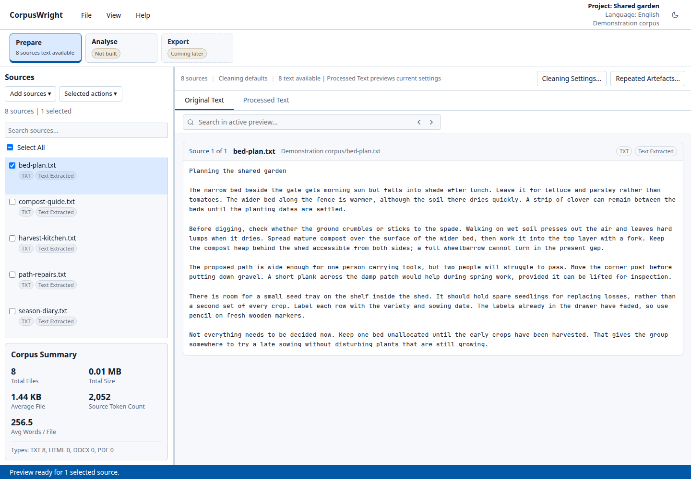
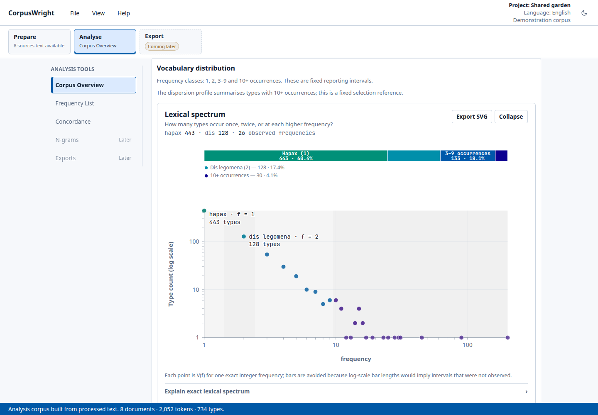
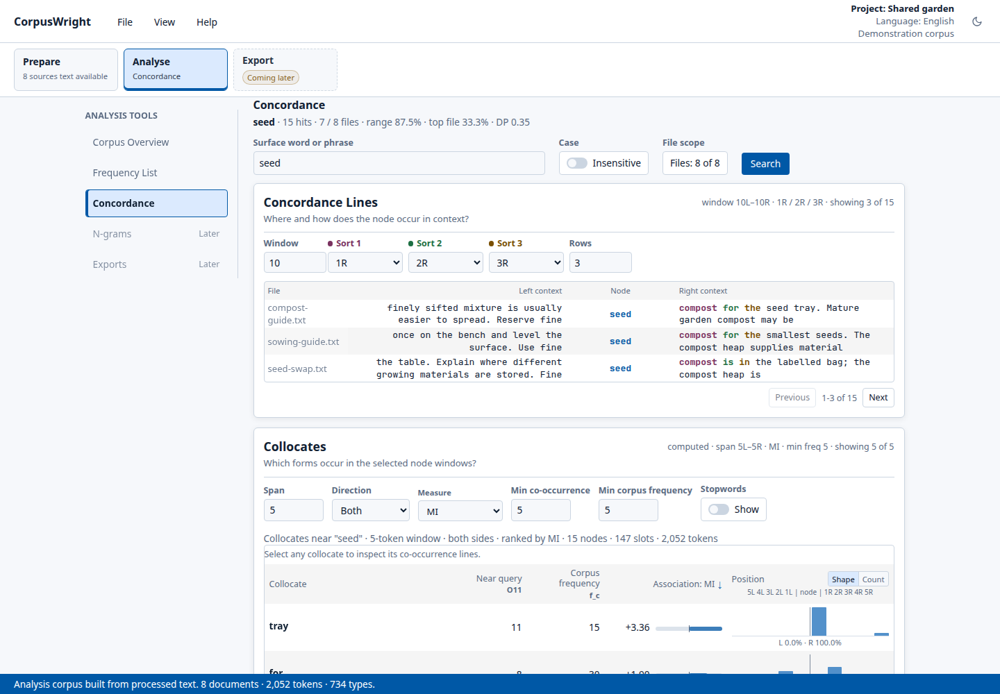
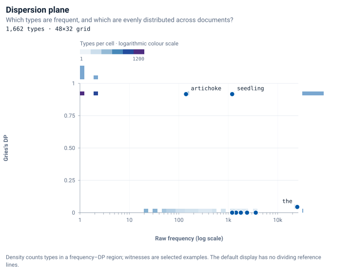
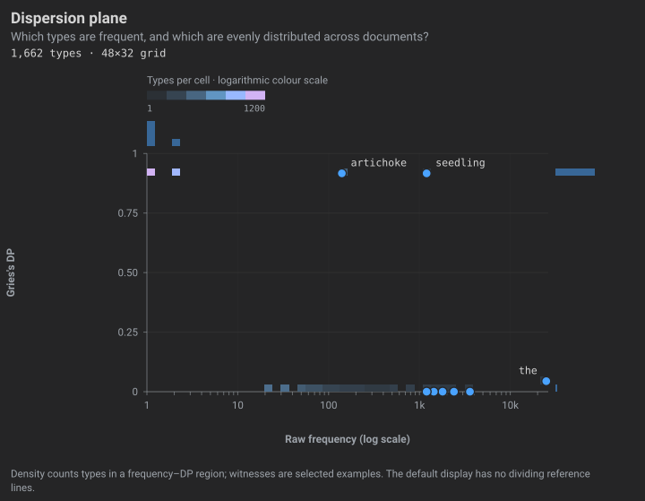

CorpusWright
Desktop software for corpus preparation and descriptive corpus analysis.
Inspect the processed text before counting. Examine counts and distributions across documents, then use Concordance to read individual occurrences in context.
Public experimental alpha. Project status and release details.
Inside CorpusWright






Three application views from eight synthetic garden texts. The Guide uses the same demonstration corpus.
Frequency and dispersion
CorpusWright reports frequency with document range and DP, so a corpus total can be checked against its distribution across documents.
In the Dispersion plane, seedling occurs 1,200 times, all in one of twelve equally sized documents (DP ≈ 0.92). The word and occurs 3,600 times in equal shares across all twelve (DP = 0).
Methods & measures explains the definitions and limits on interpretation.




Preparation record
The cleaned-corpus export records cleaning and tokenisation settings, extraction warnings and source/output checksums, so later file changes can be detected.
Local processing
CorpusWright processes corpus files on your computer. It does not upload them to a hosted analysis service. Keep the original sources and review the processed text before relying on its counts.